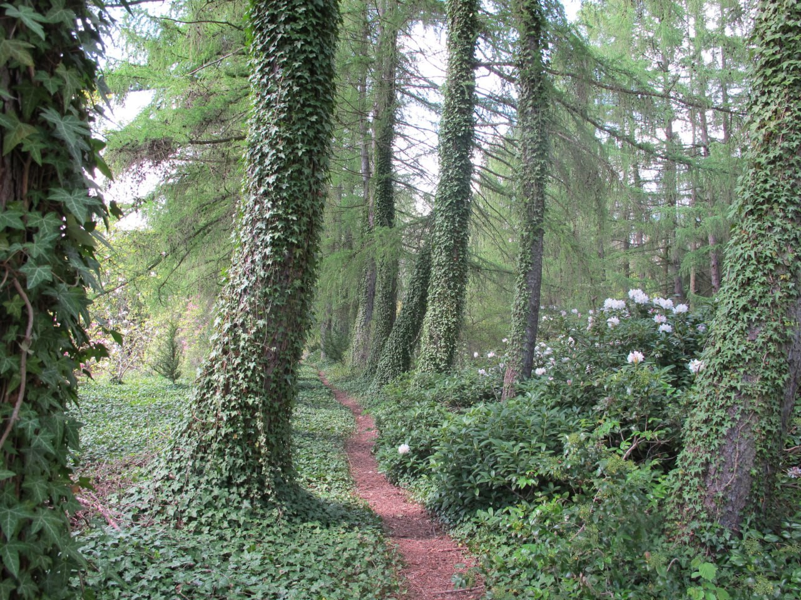
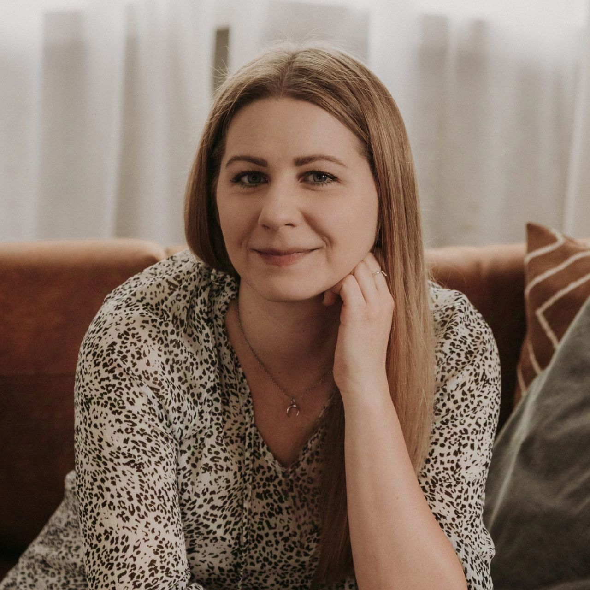
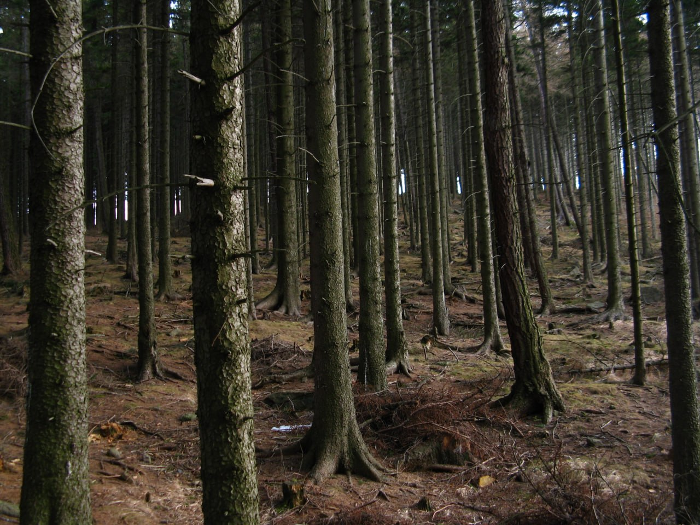

Psychoterapia Gestalt i arteterapia
Spotkanie z sobą,
tu i teraz.
Towarzyszę w procesie, w którym to, co dotąd niewidoczne, może stać się jasne — a to, co przytłaczające, znajdzie w końcu swoje miejsce.
Certyfikowana psychoterapeutka Gestalt Arteterapeutka Stała superwizja u certyfikowanych superwizorów


O mnie
Magdalena Lech
Jestem certyfikowaną psychoterapeutką Gestalt oraz arteterapeutką.
Do każdej osoby podchodzę indywidualnie, starając się jak najlepiej zrozumieć jej sytuację oraz trudności, z którymi się zgłasza. Ważne jest dla mnie, aby naprawdę zobaczyć człowieka.
W relacji terapeutycznej szczególnie ważne są dla mnie wzajemny szacunek, otwartość i autentyczność.
Zapraszam również osoby będące w trakcie szkoły psychoterapii, które poszukują własnej terapii.
- Certyfikowana psychoterapeutka Gestalt
- Arteterapeutka
- Stała superwizja u certyfikowanych superwizorów
Podejście
Czym jest terapia Gestalt
W psychologii Gestalt to, co zauważamy najsilniej, nazywamy figurą — reszta pozostaje tłem. W terapii pracujemy właśnie na tej granicy: trudna emocja, powtarzający się konflikt czy cielesne napięcie stają się figurą, którą razem oglądamy, zanim ustąpi miejsca czemuś nowemu.
Nie analizujemy przeszłości z dystansu — pracujemy w kontakcie, tu i teraz, bo to, co dzieje się między nami w gabinecie, jest żywym odbiciem tego, jak funkcjonujesz na zewnątrz.
W podejściu Gestalt człowiek jest postrzegany jako aktywna jednostka, która dzięki rozwojowi samoświadomości i sprawczości może osiągać większy dobrostan. Dlatego tak ważne jest życie w zgodzie ze sobą, uważność na własne ciało oraz kontakt z tym, co dzieje się wewnątrz.
Arteterapia jest procesem twórczym, który umożliwia komunikację niewerbalną, a tym samym daje więcej przestrzeni do wyrażania myśli, emocji i wewnętrznych doświadczeń. W swojej pracy korzystam z różnych metod artystycznych i form wyrazu, które mogą wspierać poprawę samopoczucia oraz jakości życia.
Figura i tło: to, co staje się ważne, zawsze pojawia się na tle całej reszty doświadczenia.
Dla kogo
Z czym najczęściej do mnie przychodzą
Zgłaszają się do mnie osoby w bardzo różnych momentach życia — nie trzeba mieć nazwy na to, co się dzieje, żeby zacząć rozmawiać.
- Stany lękowe i chroniczne napięcie
- Kryzysy życiowe i trudne decyzje
- Trudności w relacjach i bliskości
- Żałoba i doświadczenie straty
- Niskie poczucie własnej wartości
- Wypalenie i przeciążenie
- Chęć lepszego rozumienia siebie — bez konkretnego „problemu”

Jak pracuję
Przebieg współpracy
Pierwszy kontakt
Piszesz lub dzwonisz. Krótko odpowiadam i umawiamy termin pierwszego spotkania.
Konsultacja wstępna (50 min)
Poznajemy się. Opowiadasz, z czym przychodzisz, ja pytam — oboje sprawdzamy, czy dobrze nam się rozmawia.
Kontrakt terapeutyczny
Ustalamy zasady współpracy: częstotliwość spotkań, cel, ramy czasowe i finansowe.
Regularne spotkania
50 minut, zwykle raz w tygodniu — wspólna praca w rytmie, który daje przestrzeń na realną zmianę.
Cennik
Koszt sesji
Pierwsze spotkanie umawiamy telefonicznie lub mailowo — chętnie odpowiem na pytania jeszcze przed decyzją.
Pytania
Najczęściej pytacie o to
Czy terapia online jest tak samo skuteczna jak stacjonarna?+
W nurcie Gestalt kontakt jest najważniejszy, a dobrej jakości połączenie wideo pozwala go zachować. Wiele osób zaczyna online i to działa równie dobrze jak spotkania w gabinecie.
Ile trwa terapia?+
To zależy od tego, z czym przychodzisz. Czasem wystarczy kilka spotkań konsultacyjnych, czasem proces trwa rok lub dłużej — decydujemy o tym wspólnie, regularnie to sprawdzając.
Czy mogę zrezygnować w dowolnym momencie?+
Tak. Poproszę jedynie o rozmowę o zakończeniu na jednym ze spotkań — to ważna część procesu, nie formalność.
Czy to, o czym rozmawiamy, zostaje w gabinecie?+
Tak — obowiązuje mnie tajemnica zawodowa i kodeks etyczny psychoterapeuty.
Kontakt
Napisz — chętnie odpowiem.
Pierwszy krok bywa najtrudniejszy. Możesz go zrobić mailem, telefonicznie, albo po prostu zostawiając wiadomość.
- kontakt@wsroddrzew.pl
- +48 600 000 000
- ul. Leśna 12/3, 30-001 Kraków
- Konsultacje: pon.–czw., 9:00–19:00